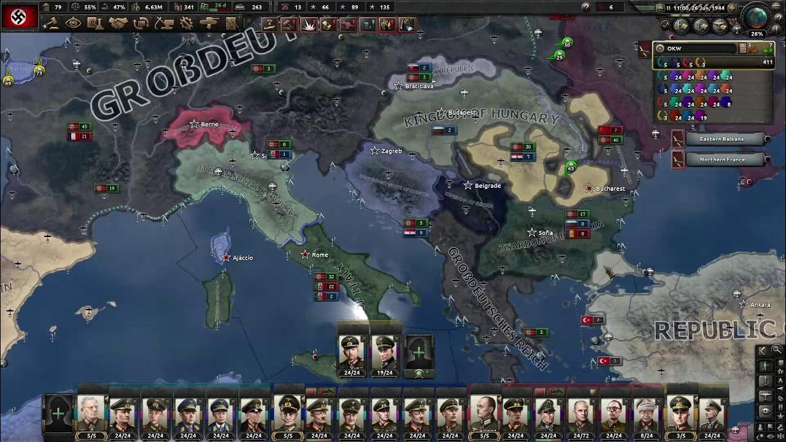

Hearts of Iron 4
Jestem fanatykiem gry Hearts of Iron 4. W grze można zmieni bieg z historii z okresu drugiej wojny światowej. Gra posiada dużo DLC (Waking the Tiger, Man the Guns, Not a step back, La Resistance,
Death or Dishounour, Battle of Bouspours, Arms Against Tyrrany) w tym rku wychodzi nowe DLC wspomniane przeze mnie wcześniej Arms Against Tyrrany. Oferuje ono rozwinicie do krajów
skandynawskich- Norwegii, Danii, Szwecji i Finlandii. Czekam n Dlc które będzoe oferowało rozwionięcie krajów bliskiego wschodu- francuskiej syrii, iraku, iranu, turcji, arabii saudyjskiej,
brytyjskych dominiów na bliskim wschodzie oraz egiptu. Nowa edycja gry wychodzi co 7 lat co oznacza że hearts of iron V wyjdzie w 2024 roku. Gra jest tworzona przez Paradox Ineractive0 szwedzką firme produkująca gry strategiczne osadzeone w historii takie jak Age of History II, Crusader Kings III czy Victoria III.
Gra posiada także warsztat, moje ulubione mody z warsztatu to road to 56, scenario korea alpha 1950, scenario overlord 1944, scenario stalingrad 1942, player led peace confederence, mulitplayer +, colorized buttons, Goddamerrut 1944, Primo Victoria, Buff japan, Buff China, Buff Germany, Buff France, Time machine Poland, Time machine spain & USA, Commanders in conflict speed 5. better speed, regional focus tree, hoi4 the great war, millenium dawn, Endsieg: ultimate victory, Hungary reworked, poland reworked, rommels reich, Scenario valkyrie 1944.
Ostatni mod prezentuje spisek konspiratorów pod przywódtzwem ghrabii von Stauffenberga przeciwko Hitleorowi co miało miejsce w historii. Moim ulubionym modem natomiast jest Commanders in conflict, ponieważ można tam grac na historycznych mapach kampanii takich jak operation sonnenblume (północna afryka), across the rhine (przez ren), Meditareein czy China. Moim ulubionym kraje do gry jest Japonia, poniewa ż można na niej śwoetmoe używać doktyrny zmasowanego ataku. Moim najlepszym osiągnieciem jest Sunt Tzu reborn które polega na doporowadzeniu skila ogólnego wybranego chińskiego generała do 9. Osiągniecie osiągnęło tylko 1,5% graczy.
